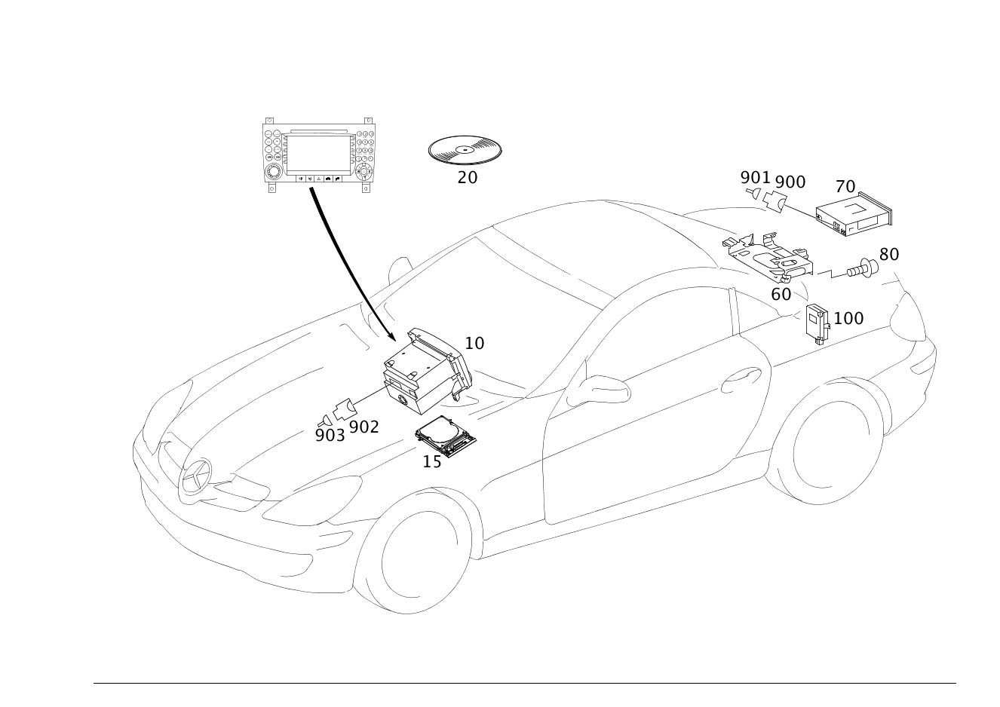

| № | Артикул | Название | Кол. | Примечание | Ограничение |
|---|---|---|---|---|---|
| 10 | A 171 820 20 89 | ПАНЕЛЬ УПРАВЛ. | 1 | COMAND | 529 |
| 10 | A 171 820 38 89 | Элемент управления | 1 | COMAND | 529 |
| 10 | A 171 820 53 89 | Элемент управления | 1 | COMAND | 529 |
| 10 | A 171 820 66 89 | Элемент управления | 1 | COMAND | 529 |
| 10 | A 171 820 68 89 | Элемент управления | 1 | COMAND; JAPAN | 529 |
| 10 | A 171 820 16 89 | Элемент управления | 1 | COMAND [697] ДЕТАЛЬ ПОСТАВЛЯЕТСЯ ТОЛЬКО/ИЛИ ТАКЖЕ КАК ЗАП.ЧАСТЬ | 527 |
| 10 | A 171 820 29 89 | Устройство управления | 1 | COMAND [697] ДЕТАЛЬ ПОСТАВЛЯЕТСЯ ТОЛЬКО/ИЛИ ТАКЖЕ КАК ЗАП.ЧАСТЬ | 527 |
| 10 | A 171 820 33 89 | Элемент управления | 1 | COMAND [697] ДЕТАЛЬ ПОСТАВЛЯЕТСЯ ТОЛЬКО/ИЛИ ТАКЖЕ КАК ЗАП.ЧАСТЬ | 527 |
| 10 | A 171 820 42 89 | Элемент управления | 1 | COMAND [697] ДЕТАЛЬ ПОСТАВЛЯЕТСЯ ТОЛЬКО/ИЛИ ТАКЖЕ КАК ЗАП.ЧАСТЬ | 527 |
| 10 | A 171 820 36 89 | Устройство управления | 1 | COMAND; HU [697] ДЕТАЛЬ ПОСТАВЛЯЕТСЯ ТОЛЬКО/ИЛИ ТАКЖЕ КАК ЗАП.ЧАСТЬ | 527 |
| 10 | A 171 820 62 89 | Элемент управления | 1 | COMAND; HU [697] ДЕТАЛЬ ПОСТАВЛЯЕТСЯ ТОЛЬКО/ИЛИ ТАКЖЕ КАК ЗАП.ЧАСТЬ | 527 |
| 10 | A 171 820 10 97 | Устройство управления | 1 | COMAND ECE; HU [697] ДЕТАЛЬ ПОСТАВЛЯЕТСЯ ТОЛЬКО/ИЛИ ТАКЖЕ КАК ЗАП.ЧАСТЬ | 527 |
| 10 | A 171 820 16 97 | Устройство управления | 1 | COMAND ECE [697] ДЕТАЛЬ ПОСТАВЛЯЕТСЯ ТОЛЬКО/ИЛИ ТАКЖЕ КАК ЗАП.ЧАСТЬ | 527 |
| 10 | A 171 820 20 97 | Устройство управления | 1 | COMAND ECE [525] ОБРАТНАЯ СВЯЗЬ ОБЯЗАТЕЛЬНО ЧЕРЕЗ СИСТЕМУ РАСЧЕТОВ SYREK В ФРГ ДЕТАЛЬ ЗАКАЗЫВАТЬ КАК ВОССТАНОВЛЕННУЮ ДЕТАЛЬ [697] ДЕТАЛЬ ПОСТАВЛЯЕТСЯ ТОЛЬКО/ИЛИ ТАКЖЕ КАК ЗАП.ЧАСТЬ | 527 |
| 10 | A 171 870 20 94 | ПАНЕЛЬ УПРАВЛ. | 1 | COMAND [525] ОБРАТНАЯ СВЯЗЬ ОБЯЗАТЕЛЬНО ЧЕРЕЗ СИСТЕМУ РАСЧЕТОВ SYREK В ФРГ ДЕТАЛЬ ЗАКАЗЫВАТЬ КАК ВОССТАНОВЛЕННУЮ ДЕТАЛЬ [697] ДЕТАЛЬ ПОСТАВЛЯЕТСЯ ТОЛЬКО/ИЛИ ТАКЖЕ КАК ЗАП.ЧАСТЬ | 527 |
| 10 | A 171 870 50 94 | Элемент управления | 1 | COMAND | 527+498 |
| 10 | A 171 870 86 94 | Элемент управления | 1 | COMAND | 527+498 |
| 10 | A 171 820 19 89 | Элемент управления | 1 | COMAND | 530 |
| 10 | A 171 820 30 89 | Устройство управления (BEDIENGERAET) | 1 | COMAND | 530/528 |
| 10 | A 171 820 43 89 | Элемент управления | 1 | COMAND | 530/528 |
| 10 | A 171 820 34 89 | Элемент управления | 1 | COMAND; HU | 530/528 |
| 10 | A 171 820 63 89 | Элемент управления | 1 | COMAND; HU | 530/528 |
| 10 | A 171 820 11 97 | Устройство управления (BEDIENGERAET) | 1 | COMAND; HU | 530/528 |
| 10 | A 171 820 17 97 | Устройство управления (BEDIENGERAET) | 1 | COMAND | 530/528 |
| 10 | A 171 906 03 00 | Элемент управления (BEDIENTEIL) | 1 | COMAND | (530/528) |
| 10 | A 171 870 61 94 | Элемент управления | 1 | COMAND [525] ОБРАТНАЯ СВЯЗЬ ОБЯЗАТЕЛЬНО ЧЕРЕЗ СИСТЕМУ РАСЧЕТОВ SYREK В ФРГ ДЕТАЛЬ ЗАКАЗЫВАТЬ КАК ВОССТАНОВЛЕННУЮ ДЕТАЛЬ [697] ДЕТАЛЬ ПОСТАВЛЯЕТСЯ ТОЛЬКО/ИЛИ ТАКЖЕ КАК ЗАП.ЧАСТЬ | 527 |
| 10 | A 171 906 12 00 | Элемент управления | 1 | COMAND [525] ОБРАТНАЯ СВЯЗЬ ОБЯЗАТЕЛЬНО ЧЕРЕЗ СИСТЕМУ РАСЧЕТОВ SYREK В ФРГ ДЕТАЛЬ ЗАКАЗЫВАТЬ КАК ВОССТАНОВЛЕННУЮ ДЕТАЛЬ [697] ДЕТАЛЬ ПОСТАВЛЯЕТСЯ ТОЛЬКО/ИЛИ ТАКЖЕ КАК ЗАП.ЧАСТЬ | 527 |
| 10 | A 171 906 25 00 | Элемент управления | 1 | COMAND [525] ОБРАТНАЯ СВЯЗЬ ОБЯЗАТЕЛЬНО ЧЕРЕЗ СИСТЕМУ РАСЧЕТОВ SYREK В ФРГ ДЕТАЛЬ ЗАКАЗЫВАТЬ КАК ВОССТАНОВЛЕННУЮ ДЕТАЛЬ [697] ДЕТАЛЬ ПОСТАВЛЯЕТСЯ ТОЛЬКО/ИЛИ ТАКЖЕ КАК ЗАП.ЧАСТЬ | 527 |
| 10 | A 171 900 05 00 | Блок управления (STEUERGERAET) | 1 | COMAND [525] ОБРАТНАЯ СВЯЗЬ ОБЯЗАТЕЛЬНО ЧЕРЕЗ СИСТЕМУ РАСЧЕТОВ SYREK В ФРГ ДЕТАЛЬ ЗАКАЗЫВАТЬ КАК ВОССТАНОВЛЕННУЮ ДЕТАЛЬ [697] ДЕТАЛЬ ПОСТАВЛЯЕТСЯ ТОЛЬКО/ИЛИ ТАКЖЕ КАК ЗАП.ЧАСТЬ | 527 |
| 10 | A 171 870 69 94 | Элемент управления | 1 | COMAND | 527+498 |
| 10 | A 171 906 15 00 | Элемент управления | 1 | COMAND | 527+498 |
| 10 | A 171 906 28 00 | Элемент управления | 1 | COMAND | 527+498 |
| 10 | A 171 900 09 00 | Блок управления | 1 | COMAND | 527+498 |
| 10 | A 171 900 11 00 | Блок управления (STEUERGERAET) | 1 | COMAND [672] ДЕТАЛЬ ПОСЛЕ УСТАН.ПРОВЕРИТЬ НА АКТУАЛЬНОСТЬ "ПРОШИВНОГО" ПО [697] ДЕТАЛЬ ПОСТАВЛЯЕТСЯ ТОЛЬКО/ИЛИ ТАКЖЕ КАК ЗАП.ЧАСТЬ [402] БОЛЬШЕ НЕ ПОСТАВЛЯЕТСЯ | 527 |
| 10 | A 171 900 14 00 | Блок управления | 1 | COMAND [672] ДЕТАЛЬ ПОСЛЕ УСТАН.ПРОВЕРИТЬ НА АКТУАЛЬНОСТЬ "ПРОШИВНОГО" ПО | 527+498 |
| 10 | A 171 906 36 00 | Устройство управления (BEDIENGERAET) | 1 | ГОЛОВНОЕ УСТРОЙСТВО [402] БОЛЬШЕ НЕ ПОСТАВЛЯЕТСЯ | (528/530) |
| 10 | A 171 820 82 89 | Устройство управления (BEDIENGERAET) | 1 | COMAND ECE [525] ОБРАТНАЯ СВЯЗЬ ОБЯЗАТЕЛЬНО ЧЕРЕЗ СИСТЕМУ РАСЧЕТОВ SYREK В ФРГ ДЕТАЛЬ ЗАКАЗЫВАТЬ КАК ВОССТАНОВЛЕННУЮ ДЕТАЛЬ [697] ДЕТАЛЬ ПОСТАВЛЯЕТСЯ ТОЛЬКО/ИЛИ ТАКЖЕ КАК ЗАП.ЧАСТЬ | 527 |
| 10 | A 171 870 30 94 | Устройство управления | 1 | COMAND ECE [525] ОБРАТНАЯ СВЯЗЬ ОБЯЗАТЕЛЬНО ЧЕРЕЗ СИСТЕМУ РАСЧЕТОВ SYREK В ФРГ ДЕТАЛЬ ЗАКАЗЫВАТЬ КАК ВОССТАНОВЛЕННУЮ ДЕТАЛЬ [697] ДЕТАЛЬ ПОСТАВЛЯЕТСЯ ТОЛЬКО/ИЛИ ТАКЖЕ КАК ЗАП.ЧАСТЬ | 527 |
| 10 | A 171 870 36 94 | Устройство управления | 1 | COMAND ECE [525] ОБРАТНАЯ СВЯЗЬ ОБЯЗАТЕЛЬНО ЧЕРЕЗ СИСТЕМУ РАСЧЕТОВ SYREK В ФРГ ДЕТАЛЬ ЗАКАЗЫВАТЬ КАК ВОССТАНОВЛЕННУЮ ДЕТАЛЬ [697] ДЕТАЛЬ ПОСТАВЛЯЕТСЯ ТОЛЬКО/ИЛИ ТАКЖЕ КАК ЗАП.ЧАСТЬ | 527 |
| 10 | A 171 870 46 94 | Элемент управления | 1 | COMAND ECE [525] ОБРАТНАЯ СВЯЗЬ ОБЯЗАТЕЛЬНО ЧЕРЕЗ СИСТЕМУ РАСЧЕТОВ SYREK В ФРГ ДЕТАЛЬ ЗАКАЗЫВАТЬ КАК ВОССТАНОВЛЕННУЮ ДЕТАЛЬ [697] ДЕТАЛЬ ПОСТАВЛЯЕТСЯ ТОЛЬКО/ИЛИ ТАКЖЕ КАК ЗАП.ЧАСТЬ | 527 |
| 10 | A 171 870 82 94 | Элемент управления | 1 | COMAND ECE [525] ОБРАТНАЯ СВЯЗЬ ОБЯЗАТЕЛЬНО ЧЕРЕЗ СИСТЕМУ РАСЧЕТОВ SYREK В ФРГ ДЕТАЛЬ ЗАКАЗЫВАТЬ КАК ВОССТАНОВЛЕННУЮ ДЕТАЛЬ [697] ДЕТАЛЬ ПОСТАВЛЯЕТСЯ ТОЛЬКО/ИЛИ ТАКЖЕ КАК ЗАП.ЧАСТЬ | 527 |
| 10 | A 171 870 22 94 | Элемент управления | 1 | 510+494 | |
| 10 | A 171 870 32 94 | Элемент управления | 1 | 510+494 | |
| 10 | A 171 870 48 94 | Элемент управления | 1 | 510+494 | |
| 10 | A 171 870 64 94 | Элемент управления | 1 | 510+494 | |
| 10 | A 171 870 65 94 | Элемент управления | 1 | АУДИОСИСТЕМА \- CD\-ЧЕЙНДЖЕР | 510+494 |
| 10 | A 171 900 07 00 | Блок управления (STEUERGERAET) | 1 | АУДИОСИСТЕМА \- CD\-ЧЕЙНДЖЕР [402] БОЛЬШЕ НЕ ПОСТАВЛЯЕТСЯ | 510+494 |
| 10 | A 171 870 02 94 | Элемент управления | 1 | COMAND [525] ОБРАТНАЯ СВЯЗЬ ОБЯЗАТЕЛЬНО ЧЕРЕЗ СИСТЕМУ РАСЧЕТОВ SYREK В ФРГ ДЕТАЛЬ ЗАКАЗЫВАТЬ КАК ВОССТАНОВЛЕННУЮ ДЕТАЛЬ [697] ДЕТАЛЬ ПОСТАВЛЯЕТСЯ ТОЛЬКО/ИЛИ ТАКЖЕ КАК ЗАП.ЧАСТЬ [682] НЕ ПОСТАВЛЯЕТСЯ КАК ЗАПЧАСТЬ | 511 |
| 10 | A 171 870 19 94 | Элемент управления | 1 | COMAND [525] ОБРАТНАЯ СВЯЗЬ ОБЯЗАТЕЛЬНО ЧЕРЕЗ СИСТЕМУ РАСЧЕТОВ SYREK В ФРГ ДЕТАЛЬ ЗАКАЗЫВАТЬ КАК ВОССТАНОВЛЕННУЮ ДЕТАЛЬ [697] ДЕТАЛЬ ПОСТАВЛЯЕТСЯ ТОЛЬКО/ИЛИ ТАКЖЕ КАК ЗАП.ЧАСТЬ [682] НЕ ПОСТАВЛЯЕТСЯ КАК ЗАПЧАСТЬ | 511 |
| 10 | A 171 870 29 94 | ПАНЕЛЬ УПРАВЛ. | 1 | COMAND [525] ОБРАТНАЯ СВЯЗЬ ОБЯЗАТЕЛЬНО ЧЕРЕЗ СИСТЕМУ РАСЧЕТОВ SYREK В ФРГ ДЕТАЛЬ ЗАКАЗЫВАТЬ КАК ВОССТАНОВЛЕННУЮ ДЕТАЛЬ [697] ДЕТАЛЬ ПОСТАВЛЯЕТСЯ ТОЛЬКО/ИЛИ ТАКЖЕ КАК ЗАП.ЧАСТЬ [682] НЕ ПОСТАВЛЯЕТСЯ КАК ЗАПЧАСТЬ | 511 |
| 10 | A 171 870 45 94 | Устройство управления | 1 | COMAND [525] ОБРАТНАЯ СВЯЗЬ ОБЯЗАТЕЛЬНО ЧЕРЕЗ СИСТЕМУ РАСЧЕТОВ SYREK В ФРГ ДЕТАЛЬ ЗАКАЗЫВАТЬ КАК ВОССТАНОВЛЕННУЮ ДЕТАЛЬ [697] ДЕТАЛЬ ПОСТАВЛЯЕТСЯ ТОЛЬКО/ИЛИ ТАКЖЕ КАК ЗАП.ЧАСТЬ [682] НЕ ПОСТАВЛЯЕТСЯ КАК ЗАПЧАСТЬ | 511 |
| 10 | A 171 870 58 94 | Элемент управления | 1 | COMAND [525] ОБРАТНАЯ СВЯЗЬ ОБЯЗАТЕЛЬНО ЧЕРЕЗ СИСТЕМУ РАСЧЕТОВ SYREK В ФРГ ДЕТАЛЬ ЗАКАЗЫВАТЬ КАК ВОССТАНОВЛЕННУЮ ДЕТАЛЬ [697] ДЕТАЛЬ ПОСТАВЛЯЕТСЯ ТОЛЬКО/ИЛИ ТАКЖЕ КАК ЗАП.ЧАСТЬ [682] НЕ ПОСТАВЛЯЕТСЯ КАК ЗАПЧАСТЬ | 511 |
| 10 | A 171 870 81 94 | Элемент управления | 1 | COMAND [525] ОБРАТНАЯ СВЯЗЬ ОБЯЗАТЕЛЬНО ЧЕРЕЗ СИСТЕМУ РАСЧЕТОВ SYREK В ФРГ ДЕТАЛЬ ЗАКАЗЫВАТЬ КАК ВОССТАНОВЛЕННУЮ ДЕТАЛЬ [697] ДЕТАЛЬ ПОСТАВЛЯЕТСЯ ТОЛЬКО/ИЛИ ТАКЖЕ КАК ЗАП.ЧАСТЬ [682] НЕ ПОСТАВЛЯЕТСЯ КАК ЗАПЧАСТЬ | 511 |
| 10 | A 171 870 59 94 | Элемент управления | 1 | [525] ОБРАТНАЯ СВЯЗЬ ОБЯЗАТЕЛЬНО ЧЕРЕЗ СИСТЕМУ РАСЧЕТОВ SYREK В ФРГ ДЕТАЛЬ ЗАКАЗЫВАТЬ КАК ВОССТАНОВЛЕННУЮ ДЕТАЛЬ [697] ДЕТАЛЬ ПОСТАВЛЯЕТСЯ ТОЛЬКО/ИЛИ ТАКЖЕ КАК ЗАП.ЧАСТЬ | 511+800 |
| 10 | A 171 906 11 00 | Элемент управления | 1 | [525] ОБРАТНАЯ СВЯЗЬ ОБЯЗАТЕЛЬНО ЧЕРЕЗ СИСТЕМУ РАСЧЕТОВ SYREK В ФРГ ДЕТАЛЬ ЗАКАЗЫВАТЬ КАК ВОССТАНОВЛЕННУЮ ДЕТАЛЬ [697] ДЕТАЛЬ ПОСТАВЛЯЕТСЯ ТОЛЬКО/ИЛИ ТАКЖЕ КАК ЗАП.ЧАСТЬ | 511+800 |
| 10 | A 171 906 24 00 | Элемент управления | 1 | [525] ОБРАТНАЯ СВЯЗЬ ОБЯЗАТЕЛЬНО ЧЕРЕЗ СИСТЕМУ РАСЧЕТОВ SYREK В ФРГ ДЕТАЛЬ ЗАКАЗЫВАТЬ КАК ВОССТАНОВЛЕННУЮ ДЕТАЛЬ [697] ДЕТАЛЬ ПОСТАВЛЯЕТСЯ ТОЛЬКО/ИЛИ ТАКЖЕ КАК ЗАП.ЧАСТЬ | 511 |
| 10 | A 171 900 04 00 | Блок управления (STEUERGERAET) | 1 | АУДИОМОДУЛЬ DVD [525] ОБРАТНАЯ СВЯЗЬ ОБЯЗАТЕЛЬНО ЧЕРЕЗ СИСТЕМУ РАСЧЕТОВ SYREK В ФРГ ДЕТАЛЬ ЗАКАЗЫВАТЬ КАК ВОССТАНОВЛЕННУЮ ДЕТАЛЬ [697] ДЕТАЛЬ ПОСТАВЛЯЕТСЯ ТОЛЬКО/ИЛИ ТАКЖЕ КАК ЗАП.ЧАСТЬ [402] БОЛЬШЕ НЕ ПОСТАВЛЯЕТСЯ | 511 |
| 10 | A 171 870 06 94 | Элемент управления | 1 | COMAND [525] ОБРАТНАЯ СВЯЗЬ ОБЯЗАТЕЛЬНО ЧЕРЕЗ СИСТЕМУ РАСЧЕТОВ SYREK В ФРГ ДЕТАЛЬ ЗАКАЗЫВАТЬ КАК ВОССТАНОВЛЕННУЮ ДЕТАЛЬ [697] ДЕТАЛЬ ПОСТАВЛЯЕТСЯ ТОЛЬКО/ИЛИ ТАКЖЕ КАК ЗАП.ЧАСТЬ | 512 |
| 10 | A 171 870 21 94 | ПАНЕЛЬ УПРАВЛ. | 1 | COMAND [525] ОБРАТНАЯ СВЯЗЬ ОБЯЗАТЕЛЬНО ЧЕРЕЗ СИСТЕМУ РАСЧЕТОВ SYREK В ФРГ ДЕТАЛЬ ЗАКАЗЫВАТЬ КАК ВОССТАНОВЛЕННУЮ ДЕТАЛЬ [697] ДЕТАЛЬ ПОСТАВЛЯЕТСЯ ТОЛЬКО/ИЛИ ТАКЖЕ КАК ЗАП.ЧАСТЬ | 512 |
| 10 | A 171 870 31 94 | Устройство управления | 1 | COMAND [525] ОБРАТНАЯ СВЯЗЬ ОБЯЗАТЕЛЬНО ЧЕРЕЗ СИСТЕМУ РАСЧЕТОВ SYREK В ФРГ ДЕТАЛЬ ЗАКАЗЫВАТЬ КАК ВОССТАНОВЛЕННУЮ ДЕТАЛЬ [697] ДЕТАЛЬ ПОСТАВЛЯЕТСЯ ТОЛЬКО/ИЛИ ТАКЖЕ КАК ЗАП.ЧАСТЬ | 512 |
| 10 | A 171 870 37 94 | Устройство управления | 1 | COMAND [525] ОБРАТНАЯ СВЯЗЬ ОБЯЗАТЕЛЬНО ЧЕРЕЗ СИСТЕМУ РАСЧЕТОВ SYREK В ФРГ ДЕТАЛЬ ЗАКАЗЫВАТЬ КАК ВОССТАНОВЛЕННУЮ ДЕТАЛЬ [697] ДЕТАЛЬ ПОСТАВЛЯЕТСЯ ТОЛЬКО/ИЛИ ТАКЖЕ КАК ЗАП.ЧАСТЬ | 512 |
| 10 | A 171 870 47 94 | Устройство управления | 1 | COMAND \- АУДИОШЛЮЗ \- CD\-ЧЕЙНДЖ. [525] ОБРАТНАЯ СВЯЗЬ ОБЯЗАТЕЛЬНО ЧЕРЕЗ СИСТЕМУ РАСЧЕТОВ SYREK В ФРГ ДЕТАЛЬ ЗАКАЗЫВАТЬ КАК ВОССТАНОВЛЕННУЮ ДЕТАЛЬ [697] ДЕТАЛЬ ПОСТАВЛЯЕТСЯ ТОЛЬКО/ИЛИ ТАКЖЕ КАК ЗАП.ЧАСТЬ | 512 |
| 10 | A 171 870 83 94 | Элемент управления | 1 | COMAND \- АУДИОШЛЮЗ \- CD\-ЧЕЙНДЖ. [525] ОБРАТНАЯ СВЯЗЬ ОБЯЗАТЕЛЬНО ЧЕРЕЗ СИСТЕМУ РАСЧЕТОВ SYREK В ФРГ ДЕТАЛЬ ЗАКАЗЫВАТЬ КАК ВОССТАНОВЛЕННУЮ ДЕТАЛЬ [697] ДЕТАЛЬ ПОСТАВЛЯЕТСЯ ТОЛЬКО/ИЛИ ТАКЖЕ КАК ЗАП.ЧАСТЬ | 512 |
| 10 | A 171 870 63 94 | Элемент управления | 1 | COMAND [525] ОБРАТНАЯ СВЯЗЬ ОБЯЗАТЕЛЬНО ЧЕРЕЗ СИСТЕМУ РАСЧЕТОВ SYREK В ФРГ ДЕТАЛЬ ЗАКАЗЫВАТЬ КАК ВОССТАНОВЛЕННУЮ ДЕТАЛЬ [697] ДЕТАЛЬ ПОСТАВЛЯЕТСЯ ТОЛЬКО/ИЛИ ТАКЖЕ КАК ЗАП.ЧАСТЬ | 512+-494 |
| 10 | A 171 906 13 00 | Элемент управления | 1 | COMAND [525] ОБРАТНАЯ СВЯЗЬ ОБЯЗАТЕЛЬНО ЧЕРЕЗ СИСТЕМУ РАСЧЕТОВ SYREK В ФРГ ДЕТАЛЬ ЗАКАЗЫВАТЬ КАК ВОССТАНОВЛЕННУЮ ДЕТАЛЬ [697] ДЕТАЛЬ ПОСТАВЛЯЕТСЯ ТОЛЬКО/ИЛИ ТАКЖЕ КАК ЗАП.ЧАСТЬ | 512+800+-523+-525+-527+-510+-511+-494+-830 |
| 10 | A 171 906 26 00 | Элемент управления | 1 | COMAND [525] ОБРАТНАЯ СВЯЗЬ ОБЯЗАТЕЛЬНО ЧЕРЕЗ СИСТЕМУ РАСЧЕТОВ SYREK В ФРГ ДЕТАЛЬ ЗАКАЗЫВАТЬ КАК ВОССТАНОВЛЕННУЮ ДЕТАЛЬ [697] ДЕТАЛЬ ПОСТАВЛЯЕТСЯ ТОЛЬКО/ИЛИ ТАКЖЕ КАК ЗАП.ЧАСТЬ | 512+-523+-525+-527+-510+-511+-494+-830 |
| 10 | A 171 900 06 00 | Блок управления (STEUERGERAET) | 1 | [525] ОБРАТНАЯ СВЯЗЬ ОБЯЗАТЕЛЬНО ЧЕРЕЗ СИСТЕМУ РАСЧЕТОВ SYREK В ФРГ ДЕТАЛЬ ЗАКАЗЫВАТЬ КАК ВОССТАНОВЛЕННУЮ ДЕТАЛЬ [697] ДЕТАЛЬ ПОСТАВЛЯЕТСЯ ТОЛЬКО/ИЛИ ТАКЖЕ КАК ЗАП.ЧАСТЬ | 512+-523+-525+-527+-510+-511+-494+-830 |
| 10 | A 171 900 12 00 | Блок управления (STEUERGERAET) | 1 | [672] ДЕТАЛЬ ПОСЛЕ УСТАН.ПРОВЕРИТЬ НА АКТУАЛЬНОСТЬ "ПРОШИВНОГО" ПО [697] ДЕТАЛЬ ПОСТАВЛЯЕТСЯ ТОЛЬКО/ИЛИ ТАКЖЕ КАК ЗАП.ЧАСТЬ [402] БОЛЬШЕ НЕ ПОСТАВЛЯЕТСЯ | 512+-494 |
| 10 | A 171 870 08 94 | Элемент управления | 1 | COMAND | 512+494 |
| 10 | A 171 870 23 94 | Элемент управления | 1 | COMAND | 512+494 |
| 10 | A 171 870 33 94 | Элемент управления | 1 | COMAND | 512+494 |
| 10 | A 171 870 39 94 | Элемент управления | 1 | COMAND | 512+494 |
| 10 | A 171 870 49 94 | Элемент управления | 1 | COMAND | 512+494 |
| 10 | A 171 870 66 94 | Устройство управления | 1 | COMAND | 512+494 |
| 10 | A 171 870 67 94 | Элемент управления | 1 | COMAND | 512+494 |
| 10 | A 171 906 14 00 | Элемент управления | 1 | COMAND | 512+494 |
| 10 | A 171 906 27 00 | Элемент управления | 1 | COMAND | 512+494 |
| 10 | A 171 900 08 00 | Блок управления (STEUERGERAET) | 1 | 512+494 | |
| 10 | A 171 900 13 00 | Блок управления (STEUERGERAET) | 1 | [672] ДЕТАЛЬ ПОСЛЕ УСТАН.ПРОВЕРИТЬ НА АКТУАЛЬНОСТЬ "ПРОШИВНОГО" ПО [697] ДЕТАЛЬ ПОСТАВЛЯЕТСЯ ТОЛЬКО/ИЛИ ТАКЖЕ КАК ЗАП.ЧАСТЬ | 512+494 |
| 10 | A 171 900 16 00 | Блок управления (STEUERGERAET) | 1 | ГОЛОВНОЕ УСТРОЙСТВО ECE A\-MID [672] ДЕТАЛЬ ПОСЛЕ УСТАН.ПРОВЕРИТЬ НА АКТУАЛЬНОСТЬ "ПРОШИВНОГО" ПО [697] ДЕТАЛЬ ПОСТАВЛЯЕТСЯ ТОЛЬКО/ИЛИ ТАКЖЕ КАК ЗАП.ЧАСТЬ [402] БОЛЬШЕ НЕ ПОСТАВЛЯЕТСЯ | 525 |
| 10 | A 171 900 17 00 | Блок управления | 1 | ГОЛОВНОЕ УСТРОЙСТВО ECE A\-MID [672] ДЕТАЛЬ ПОСЛЕ УСТАН.ПРОВЕРИТЬ НА АКТУАЛЬНОСТЬ "ПРОШИВНОГО" ПО [697] ДЕТАЛЬ ПОСТАВЛЯЕТСЯ ТОЛЬКО/ИЛИ ТАКЖЕ КАК ЗАП.ЧАСТЬ | 511 |
| 10 | A 171 820 65 89 | ПАНЕЛЬ УПРАВЛ. | 1 | COMAND | 512+830 |
| 10 | A 171 870 12 94 | Элемент управления | 1 | COMAND | 512+830 |
| 10 | A 171 870 25 94 | Элемент управления | 1 | COMAND | 512+830 |
| 10 | A 171 870 35 94 | Элемент управления | 1 | COMAND | 512+830 |
| 10 | A 171 870 41 94 | Элемент управления | 1 | COMAND | 512+830 |
| 10 | A 171 870 51 94 | Элемент управления | 1 | COMAND | 512+830 |
| 10 | A 171 870 87 94 | Элемент управления | 1 | COMAND | 512+830 |
| 10 | A 171 870 71 94 | Элемент управления | 1 | COMAND | 512+830 |
| 10 | A 171 906 16 00 | Элемент управления | 1 | COMAND | 512+830 |
| 10 | A 171 906 29 00 | Элемент управления | 1 | COMAND | 512+830 |
| 10 | A 171 900 10 00 | Блок управления (STEUERGERAET) | 1 | COMAND | 512+830 |
| 10 | A 171 900 15 00 | Блок управления | 1 | COMAND [672] ДЕТАЛЬ ПОСЛЕ УСТАН.ПРОВЕРИТЬ НА АКТУАЛЬНОСТЬ "ПРОШИВНОГО" ПО | 512+830 |
| 15 | A 000 906 02 28 | - Жесткий диск (FESTPLATTE) | 1 | НАВИГАЦИОННЫЙ КОМПЬЮТЕР HIGH NTG 2.5 | (527/512) |
| 15 | A 000 906 03 28 | - Жесткий диск (FESTPLATTE) | 1 | НАВИГАЦИОННЫЙ КОМПЬЮТЕР HIGH NTG 2.5 | 512+494 |
| 15 | A 000 906 86 02 | - Жесткий диск (FESTPLATTE) | 1 | НАВИГАЦИОННЫЙ КОМПЬЮТЕР [402] БОЛЬШЕ НЕ ПОСТАВЛЯЕТСЯ | 512+830 |
| 20 | A 211 827 66 59 | CD-ROM | 1 | ДИСК ДЛЯ ЕВРОПЫ; AUDIO 50 APS | 525 |
| 20 | A 211 827 94 59 | CD-ROM | 1 | ДИСК ДЛЯ ЕВРОПЫ ECE NTG 1 V 4.1; AUDIO 50 APS | 525 |
| 20 | A 211 827 97 59 | CD-ROM | 1 | ДИСК ДЛЯ ЕВРОПЫ ECE NTG 1 V 4.1 | 525 |
| 20 | A 211 827 11 65 | CD-ROM | 1 | ДИСК ДЛЯ ЕВРОПЫ | 525 |
| 20 | A 211 827 16 65 | CD-ROM | 1 | ДИСК ДЛЯ ЕВРОПЫ | 525 |
| 20 | A 171 827 01 59 | DVD-диск | 1 | ДИСК ДЛЯ ЕВРОПЫ | 511/525 |
| 20 | A 171 827 14 59 | DVD-диск | 1 | ДИСК ДЛЯ ЕВРОПЫ | 511/525 |
| 20 | A 171 827 12 59 | DVD-диск | 1 | ДИСК ДЛЯ ЕВРОПЫ NAVI ECE MID NTG 2.5 V 2.0 | 511/525 |
| 20 | A 171 827 34 59 | DVD-диск | 1 | ДИСК ДЛЯ ЕВРОПЫ NAVI ECE MID NTG 2.5 V 2.0 | 511/525 |
| 20 | A 219 827 00 59 | DVD-ROM | 1 | ДИСК ДЛЯ ЕВРОПЫ NAVI ECE MID NTG 2.5 V 2.0 | 511/525 |
| 20 | A 219 827 11 59 | DVD-ROM | 1 | ДИСК ДЛЯ ЕВРОПЫ 2010/2011 NTG2 | 511/525 |
| 20 | A 219 827 18 59 | DVD-ROM | 1 | ДИСК ДЛЯ ЕВРОПЫ 2010/2011 NTG2 | 511/525 |
| 20 | A 211 827 22 65 | DVD-диск | 1 | 525 | |
| 20 | A 211 827 25 65 | CD-ROM | 1 | 525 | |
| 20 | A 211 827 34 65 | CD-ROM | 1 | 525 | |
| 20 | A 211 827 40 65 | DVD-ROM | 1 | 525 | |
| 20 | A 211 827 21 65 | DVD-диск | 1 | 527 | |
| 20 | A 211 827 24 65 | DVD-диск | 1 | 527 | |
| 20 | A 211 827 33 65 | DVD-ROM | 1 | 2010/2011 NTG1 V11.0 | 527 |
| 20 | A 211 827 39 65 | DVD-ROM | 1 | 2010/2011 NTG1 V11.0 | 527 |
| 20 | A 211 827 42 65 | DVD-ROM | 1 | 2010/2011 NTG1 V11.0 | 527 |
| 20 | A 211 827 23 65 | DVD-диск | 1 | NTG1 V8.0 | 530 |
| 20 | A 211 827 26 65 | DVD-диск | 1 | NTG1 V8.0 | 530 |
| 20 | A 211 827 35 65 | DVD-ROM | 1 | 2010/2011 NTG1 | 530 |
| 20 | A 211 827 41 65 | DVD-ROM | 1 | 2011/2012 NTG1 | 530 |
| 20 | A 211 827 50 65 | DVD-ROM | 1 | NTG1 V14.0 | 530 |
| 20 | A 211 827 31 65 | DVD-диск | 1 | NTG1 V6.0 | 527+(625/919L) |
| 20 | A 211 827 32 65 | DVD-диск (DVD-ROM) | 1 | NTG1 V6.0 [402] БОЛЬШЕ НЕ ПОСТАВЛЯЕТСЯ | 527+(625/919L) |
| 20 | A 211 827 27 65 | DVD-диск (DVD-ROM) | 1 | NTG1 V5.0 [402] БОЛЬШЕ НЕ ПОСТАВЛЯЕТСЯ | 527+(823L/831L/855L/875L/879L/915L) |
| 20 | A 211 827 28 65 | DVD-диск | 1 | NTG1 V5.0 | 527+(823L/831L/855L/875L/879L/915L) |
| 20 | A 211 827 29 65 | DVD-диск | 1 | V7.0 NTG1 | 527+(601L/623/647L/649L/675L/841L/843L) |
| 20 | A 211 827 30 65 | DVD-диск (DVD-ROM) | 1 | V7.0 NTG1 [402] БОЛЬШЕ НЕ ПОСТАВЛЯЕТСЯ | 527+(601L/623/647L/649L/675L/841L/843L) |
| 20 | A 171 827 20 59 | DVD-диск | 1 | NTG 2.5 USA V1.1 | 530+494 |
| 20 | A 171 827 13 59 | DVD-ROM | 1 | NTG 2.5 USA V1.1 | 530+494 |
| 20 | A 171 827 27 59 | DVD-диск | 1 | NTG 2.5 USA V1.1 | 530+494 |
| 20 | A 219 827 06 59 | DVD-ROM | 1 | 2010 NTG2.5 V4 | 530+494 |
| 20 | A 219 827 07 59 | DVD-ROM | 1 | 2010 NTG2.5 V4 | 530+494 |
| 20 | A 219 827 15 59 | DVD-ROM | 1 | 2010 NTG2.5 V4 | 530+494 |
| 20 | A 219 827 27 59 | DVD-ROM | 1 | 2010 NTG2.5 V4 | 530+494 |
| 20 | A 171 827 37 59 | DVD-ROM | 1 | NTG2.5 V2.0 | 512+830 |
| 20 | A 219 827 05 59 | DVD-ROM | 1 | NTG2.5 V3. | 512+830 |
| 20 | A 219 827 19 59 | DVD-ROM | 1 | NTG2.5 V3. | 512+830 |
| 20 | A 171 827 04 59 | DVD-диск | 1 | 527+498 | |
| 20 | A 171 827 21 59 | DVD-диск | 1 | (512/527)+(5XXL/2XXL) | |
| 20 | A 171 827 11 59 | DVD-диск | 1 | DVD\-ROM / NAVI ECE 2008 NTG2.5 V2.0 | (512/527)+(5XXL/2XXL) |
| 20 | A 171 827 24 59 | DVD-диск | 1 | DVD\-ROM / NAVI ECE 2009 NTG2.5 V3.0 | (512/527)+(5XXL/2XXL) |
| 20 | A 219 827 10 59 | DVD-ROM | 1 | DVD\-ROM / NAVI ECE 2009 NTG2.5 V3.0 | (512/527)+(5XXL/2XXL) |
| 20 | A 219 827 09 59 | DVD-ROM | 1 | DVD\-ROM / NAVI ECE 2009 NTG2.5 V3.0 | (512/527)+(5XXL/2XXL) |
| 20 | A 219 827 14 59 | DVD-ROM | 1 | DVD\-ROM / NAVI ECE 2009 NTG2.5 V3.0 | (512/527)+(5XXL/2XXL) |
| 20 | A 219 827 20 59 | DVD-ROM | 1 | DVD\-ROM / NAVI ECE 2009 NTG2.5 V3.0 | (512/527)+(5XXL/2XXL) |
| 20 | A 219 827 26 59 | DVD-ROM | 1 | DVD\-ROM / NAVI ECE 2009 NTG2.5 V3.0 | (512/527)+(5XXL/2XXL) |
| 20 | A 211 827 68 59 | DVD-диск | 1 | ДИСК ДЛЯ ЕВРОПЫ | 527 |
| 20 | A 171 827 07 59 | DVD-диск | 1 | 527+(625/919L) | |
| 20 | A 171 827 23 59 | DVD-ROM | 1 | 527+(625/919L) | |
| 20 | A 171 827 33 59 | DVD-ROM | 1 | NTG 2.5 V2.0 | 527+(625/919L) |
| 20 | A 219 827 03 59 | DVD-ROM | 1 | NTG 2.5 V2.0 | 527+(625/919L/923L/924L/926L/927L/9XXL) |
| 20 | A 219 827 12 59 | DVD-ROM | 1 | NTG 2.5 V4 2011 | 527+(625/919L/923L/924L/926L/927L/9XXL) |
| 20 | A 171 827 17 59 | DVD-диск | 1 | NTG2.5 V1.1 | 527+(601L/623/841L/843L/675L/647L/649L) |
| 20 | A 171 827 30 59 | DVD-диск | 1 | NTG2.5 V1.1 | 527+(601L/623/841L/843L/675L/647L/649L) |
| 20 | A 171 827 35 59 | DVD-диск | 1 | NTG2.5 V1.1 | 527+(601L/623/841L/843L/675L/647L/649L) |
| 20 | A 219 827 02 59 | DVD-ROM | 1 | 2010 NTG2.5 V3 | 527+(6XXL/623/803L/833L/835L/843L/853L/867L) |
| 20 | A 219 827 16 59 | DVD-ROM | 1 | 2010 NTG2.5 V3 | 527+(6XXL/623/803L/833L/835L/841L/843L/853L/867L/877L) |
| 20 | A 171 827 16 59 | DVD-диск | 1 | V1.1 NTG 2.5 | 527+(823L/831L/855L/875L/879L/915L) |
| 20 | A 171 827 22 59 | DVD-диск | 1 | V1.1 NTG 2.5 | 527+(823L/831L/855L/875L/879L/915L) |
| 20 | A 171 827 32 59 | DVD-диск | 1 | V1.1 NTG 2.5 | 527+(823L/831L/824L/855L/875L/879L/915L) |
| 20 | A 219 827 01 59 | DVD-ROM | 1 | 2010 NTG2.5 V3.0 | 527+(811L/813L/823L/824L/831L/845L/851L/855L/857L/865L/868L/869L/875L/879L/882L/915L) |
| 20 | A 219 827 13 59 | DVD-ROM | 1 | 2011 NTG2.5 V | 527+(823L/824L/875L/855L/879L/813L/831L/869L) |
| 20 | A 171 827 15 59 | DVD-диск | 1 | 527+(512L/516L/520L/521L/524L/526L/528L/810L/812L/814L/816L/818L) | |
| 20 | A 171 827 36 59 | DVD-ROM | 1 | 527+(512L/516L/520L/521L/524L/526L/528L/810L/812L/814L/816L/818L) | |
| 20 | A 219 827 04 59 | DVD-ROM | 1 | 2010 NTG2.5 V4.0 | 527+(512L/516L/520L/521L/524L/526L/528L/810L/812L/814L/816L/818L) |
| 20 | A 219 827 17 59 | DVD-ROM | 1 | 2010 NTG2.5 V4.0 | 527+(512L/516L/520L/521L/524L/526L/528L/810L) |
| 20 | A 211 827 06 65 | DVD-диск | 1 | ДИСК ДЛЯ ЕВРОПЫ | 527 |
| 20 | A 211 827 95 59 | DVD-диск | 1 | ДИСК ДЛЯ ЕВРОПЫ | 527 |
| 20 | A 211 827 10 65 | DVD-диск | 1 | ДИСК ДЛЯ ЕВРОПЫ | 527 |
| 20 | A 211 827 85 59 | DVD-диск | 1 | АВСТРАЛИЯ | 527+625 |
| 20 | A 211 827 05 65 | DVD-диск | 1 | АВСТРАЛИЯ/НОВ.ЗЕЛАНДИЯ | 527+(625/919L) |
| 20 | A 171 827 07 59 | DVD-диск | 1 | АВСТРАЛИЯ/НОВ.ЗЕЛАНДИЯ | 512+(625/919L) |
| 20 | A 171 827 23 59 | DVD-ROM | 1 | АВСТРАЛИЯ/НОВ.ЗЕЛАНДИЯ | 512+(625/919L) |
| 20 | A 171 827 33 59 | DVD-ROM | 1 | АВСТРАЛИЯ/НОВ.ЗЕЛАНДИЯ | 512+(625/919L/923L/924L/926L/927L/9XXL) |
| 20 | A 219 827 03 59 | DVD-ROM | 1 | АВСТРАЛИЯ/НОВ.ЗЕЛАНДИЯ | 512+(625/919L/923L/924L/926L/927L/9XXL) |
| 20 | A 219 827 12 59 | DVD-ROM | 1 | АВСТРАЛИЯ/НОВ.ЗЕЛАНДИЯ | 512+(625/919L/923L/924L/926L/927L/9XXL) |
| 20 | A 211 827 88 59 | DVD-диск | 1 | ЮАР | 527+(672L/674L/675L) |
| 20 | A 211 827 04 65 | DVD-диск | 1 | ЮАР NTG1 V 5.0 | 527+(805L/807L/841L/843L/849L/861L/873L/878L/880L/647L/649L/675L) |
| 20 | A 171 827 08 59 | DVD-диск | 1 | (512/527)+(623/841L/843L/675L/647L/649L) | |
| 20 | A 171 827 17 59 | DVD-диск | 1 | (512/527)+(623/841L/843L/675L/647L/649L) | |
| 20 | A 171 827 30 59 | DVD-диск | 1 | (512/527)+(623/841L/843L/675L/647L/649L) | |
| 20 | A 171 827 35 59 | DVD-диск | 1 | NTG 2.5 V2.0 | (512/527)+(623/841L/843L/675L/647L/649L) |
| 20 | A 219 827 02 59 | DVD-ROM | 1 | 2010 NTG2.5 V3 | (512/527)+(623/841L/843L/675L/647L/649L) |
| 20 | A 219 827 16 59 | DVD-ROM | 1 | 2010 NTG2.5 V3 | (512/527)+(623/841L/843L/675L/647L/649L) |
| 20 | A 211 827 69 59 | DVD-диск | 1 | ДЛЯ САУД. АРАВИИ | 527+(805L/807L/849L/861L/873L/878L/880L) |
| 20 | A 211 827 89 59 | DVD-диск | 1 | ДЛЯ ГОНКОНГА | 527+823L |
| 20 | A 211 827 90 59 | DVD-диск | 1 | ДЛЯ СИНГАПУРА | 527+875L |
| 20 | A 211 827 98 59 | DVD-диск | 1 | ДЛЯ СИНГАПУРА | 527+(875L/855L/879L/823L) |
| 20 | A 171 827 10 59 | DVD-диск | 1 | ДЛЯ АЗИАТСКИХ СТРАН | (512/527)+(823L/855L/875L/879L) |
| 20 | A 171 827 16 59 | DVD-диск | 1 | ДЛЯ АЗИАТСКИХ СТРАН | 512+(823L/831L/855L/875L/879L/915L) |
| 20 | A 171 827 22 59 | DVD-диск | 1 | ДЛЯ АЗИАТСКИХ СТРАН | 512+(823L/831L/855L/875L/879L/915L) |
| 20 | A 171 827 32 59 | DVD-диск | 1 | ДЛЯ АЗИАТСКИХ СТРАН | 512+(823L/831L/824L/855L/875L/879L/915L) |
| 20 | A 219 827 01 59 | DVD-ROM | 1 | ДЛЯ АЗИАТСКИХ СТРАН 2010 NTG2.5 V3.0 | 512+(811L/813L/823L/824L/831L/845L/851L/855L/857L/865L/868L/869L/875L/879L/882L/915L) |
| 20 | A 219 827 13 59 | DVD-ROM | 1 | ДЛЯ АЗИАТСКИХ СТРАН 2011 NTG2.5 V | 512+(823L/824L/875L/855L/879L/813L/831L/869L) |
| 20 | A 211 827 87 59 | DVD-диск | 1 | ДЛЯ США | 530 |
| 20 | A 211 827 07 65 | DVD-диск | 1 | ДЛЯ США | 530 |
| 20 | A 211 827 96 59 | DVD-диск | 1 | ДЛЯ США | 530 |
| 20 | A 211 827 12 65 | DVD-диск | 1 | ДЛЯ США | 530 |
| 20 | A 211 827 17 65 | DVD-диск | 1 | ДЛЯ США | 530 |
| 20 | A 211 827 22 65 | DVD-диск | 1 | ДИСК ДЛЯ ЕВРОПЫ NAVI AUDIO 50 APS ECE NTG1 V9.0 | 525 |
| 20 | A 171 827 02 59 | DVD-диск | 1 | ДИСК ДЛЯ ЕВРОПЫ | (527/512) |
| 20 | A 171 827 21 59 | DVD-диск | 1 | ДИСК ДЛЯ ЕВРОПЫ | (527/512) |
| 20 | A 171 827 06 59 | DVD-диск | 1 | ДЛЯ РОССИИ | (512/527)+524L |
| 20 | A 171 827 18 59 | DVD-диск | 1 | ДЛЯ РОССИИ | (512/527)+524L |
| 20 | A 171 827 15 59 | DVD-диск | 1 | ДЛЯ РОССИИ | 512+(512L/516L/520L/521L/524L/526L/528L/810L/812L/814L/816L/818L) |
| 20 | A 171 827 36 59 | DVD-ROM | 1 | ДЛЯ РОССИИ | 512+(512L/516L/520L/521L/524L/526L/528L/810L/812L/814L/816L/818L) |
| 20 | A 219 827 04 59 | DVD-ROM | 1 | ДЛЯ РОССИИ NTG2.5 V4.0 | 512+(512L/516L/520L/521L/524L/526L/528L/810L/812L/814L/816L/818L) |
| 20 | A 219 827 17 59 | DVD-ROM | 1 | ДЛЯ РОССИИ NTG2.5 V4.0 | 512+(512L/516L/520L/521L/524L/526L/528L/810L) |
| 20 | A 171 827 03 59 | DVD-диск | 1 | ДЛЯ ЕВРОПЫ И США | 510+809 |
| 20 | A 171 827 20 59 | DVD-диск | 1 | ДЛЯ ЕВРОПЫ И США | 494+512 |
| 20 | A 171 827 05 59 | DVD-диск | 1 | ДЛЯ КИТАЯ | 512+830 |
| 20 | A 171 827 04 59 | DVD-диск | 1 | ДЛЯ ЯПОНИИ | 527+498 |
| 60 | A 171 545 30 40 | Держатель (HALTER) | 1 | НАВИГАЦИОННЫЙ КОМПЬЮТЕР | (527/529/530)+-809 |
| 70 | A 220 820 60 85 | Блок управл. | 1 | НАВИГАЦИОННЫЙ КОМПЬЮТЕР [697] ДЕТАЛЬ ПОСТАВЛЯЕТСЯ ТОЛЬКО/ИЛИ ТАКЖЕ КАК ЗАП.ЧАСТЬ | 527/530 |
| 70 | A 220 870 35 89 | электр. блок управл. КПП | 1 | НАВИГАЦИОННЫЙ КОМПЬЮТЕР [697] ДЕТАЛЬ ПОСТАВЛЯЕТСЯ ТОЛЬКО/ИЛИ ТАКЖЕ КАК ЗАП.ЧАСТЬ | 527/530 |
| 70 | A 211 870 89 26 | Блок управл. (STEUERGERAET) | 1 | НАВИГАЦИОННЫЙ КОМПЬЮТЕР [697] ДЕТАЛЬ ПОСТАВЛЯЕТСЯ ТОЛЬКО/ИЛИ ТАКЖЕ КАК ЗАП.ЧАСТЬ | (527/530) |
| 70 | A 211 870 52 26 | электр. блок управл. КПП | 1 | НАВИГАЦИОННЫЙ КОМПЬЮТЕР [697] ДЕТАЛЬ ПОСТАВЛЯЕТСЯ ТОЛЬКО/ИЛИ ТАКЖЕ КАК ЗАП.ЧАСТЬ | 527/530 |
| 70 | A 211 870 10 85 | электр. блок управл. КПП | 1 | НАВИГАЦИОННЫЙ КОМПЬЮТЕР [672] ДЕТАЛЬ ПОСЛЕ УСТАН.ПРОВЕРИТЬ НА АКТУАЛЬНОСТЬ "ПРОШИВНОГО" ПО | 527/530 |
| 70 | A 211 870 60 85 | Блок управл. (STEUERGERAET) | 1 | НАВИГАЦИОННЫЙ КОМПЬЮТЕР [525] ОБРАТНАЯ СВЯЗЬ ОБЯЗАТЕЛЬНО ЧЕРЕЗ СИСТЕМУ РАСЧЕТОВ SYREK В ФРГ ДЕТАЛЬ ЗАКАЗЫВАТЬ КАК ВОССТАНОВЛЕННУЮ ДЕТАЛЬ [697] ДЕТАЛЬ ПОСТАВЛЯЕТСЯ ТОЛЬКО/ИЛИ ТАКЖЕ КАК ЗАП.ЧАСТЬ | (527/530) |
| 80 | N 000000 001114 | Винт с 6-гр. глвк (SECHSRUNDSCHRAUBE) | 2 | ДЕРЖ. НА КРЫШКЕ БАКА; M6X15 | 527/529/530 |
| 80 | N 910143 006000 | Винт с 6-гр. глвк (SECHSRUNDSCHRAUBE) | 2 | КРОНШТЕЙН К КРОНШТЕЙНУ; M6X12 | 527/529/530 |
| 100 | A 171 820 00 85 | БЛОК УПРАВЛЕНИЯ | 1 | МИКРОФОН | 529 |
| 100 | A 171 820 04 85 | Блок управл. (STEUERGERAET) | 1 | МИКРОФОН [697] ДЕТАЛЬ ПОСТАВЛЯЕТСЯ ТОЛЬКО/ИЛИ ТАКЖЕ КАК ЗАП.ЧАСТЬ | 529 |
| 900 | A 046 545 08 28 | Штекер (STECKER) | 1 | НАВИГАЦИОННЫЙ КОМПЬЮТЕР N41/1; 8\-PIN AFK | |
| 901 | A 013 545 15 26 | Контактная втулка (KONTAKTBUCHSE) | NB | N41/1; 0.5\-0.75 MM2 SLK2.8 | |
| 902 | A 002 545 84 40 | Корпус (GEHAEUSE) | 1 | ПАНЕЛЬ УПРАВЛ. COMAND, ЧЕРН. A40/3 1A; 4\-PIN MQS | |
| 902 | A 000 545 84 30 | Корпус (GEHAEUSE) | 1 | ПАНЕЛЬ УПРАВЛ. COMAND, ЧЕРН.; 6\-PIN MQS, MOST | |
| 902 | A 001 545 47 40 | Корпус (GEHAEUSE) | 1 | COMAND A40/3; 12\-PIN MQS | |
| 902 | A 029 545 55 28 | Корпус штекерной втулки (STECKHUELSENGEHAEUSE) | 1 | ПАНЕЛЬ УПРАВЛ. COMAND, ЧЕРН. A40/3 2; 3\-PIN MQS | |
| 902 | A 220 545 39 28 | Корпус штекерной втулки (STECKHUELSENGEHAEUSE) | 1 | COMAND A40/3; 4\-PIN SLK2.8 | 498 |
| 902 | A 220 545 39 28 | Корпус штекерной втулки (STECKHUELSENGEHAEUSE) | 1 | ПАНЕЛЬ УПРАВЛ. COMAND, ЧЕРН. A40/3, CODE A; 4\-PIN SLK2.8 | 498 |
| 902 | A 002 545 85 40 | Корпус штекерной втулки (STECKHUELSENGEHAEUSE) | 1 | ПАНЕЛЬ УПРАВЛ. COMAND A40/3; 12\-PIN MQS | 498 |
| 902 | A 002 545 85 40 | Корпус штекерной втулки (STECKHUELSENGEHAEUSE) | 1 | COMAND A40/3; 12\-PIN MQS | 498 |
| 903 | A 000 540 46 05 | Электрический провод (ELEKTRISCHE LEITUNG) | NB | 0.75 MM2 MQS SN [T774] СОЕДИНИТЕЛИ СЛЕДУЕТ ЗАКАЗЫВАТЬ В СООТВЕТСТВИИ С ОБЩИМ ПОПЕРЕЧНЫМ СЕЧЕНИЕМ СОЕДИНЯЕМЫХ ПРОВОДОВРУКОВОДСТВО ПО РЕМОНТУ СМ. WIS. ================================================================================================= SOLDER CONNECTOR SLEEVES: TOTAL WIRE CROSS-SECTION: A 001 546 99 41 GREEN 0.7 - 2.4 MM2 A 002 546 00 41 RED 2.0 - 4.0 MM2 A 002 546 01 41 BLUE 3.5 - 8.0 MM2 A 002 546 11 41 YELLOW 7.5 - 12.0 MM2 BUTT JOINT: A 002 546 13 41 0.5 MM2 A 002 546 14 41 0.8 MM2 A 002 546 15 41 1.3 MM2 A 002 546 16 41 2.0 MM2 =================================================================================================== | |
| 903 | A 016 545 41 26 | Контактная втулка (KONTAKTBUCHSE) | NB | 0.25\-0.35 MM2 MQS | |
| 903 | A 013 545 16 26 | Контактная втулка (KONTAKTBUCHSE) | NB | COMAND A40/3; 1.5\-2.5 MM2 SLK2.8 | 498 |
| 903 | A 016 545 41 26 | Контактная втулка (KONTAKTBUCHSE) | NB | COMAND A40/3; 0.25\-0.35 MM2 MQS | 498 |
Позиций: 238 · подписано на схемах: 238 · колесо — плавный зум в курсор, перетаскивание — пан, двойной клик — зум, клик по артикулу — скопировать.